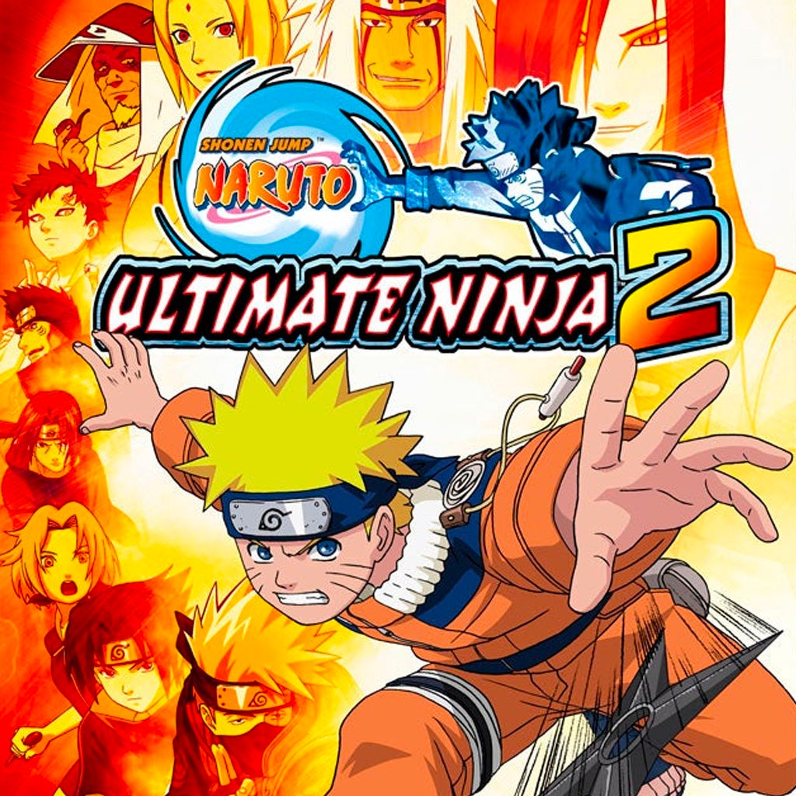
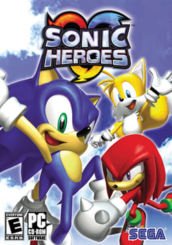
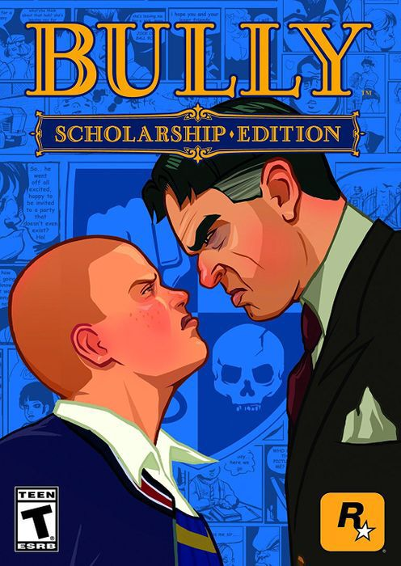
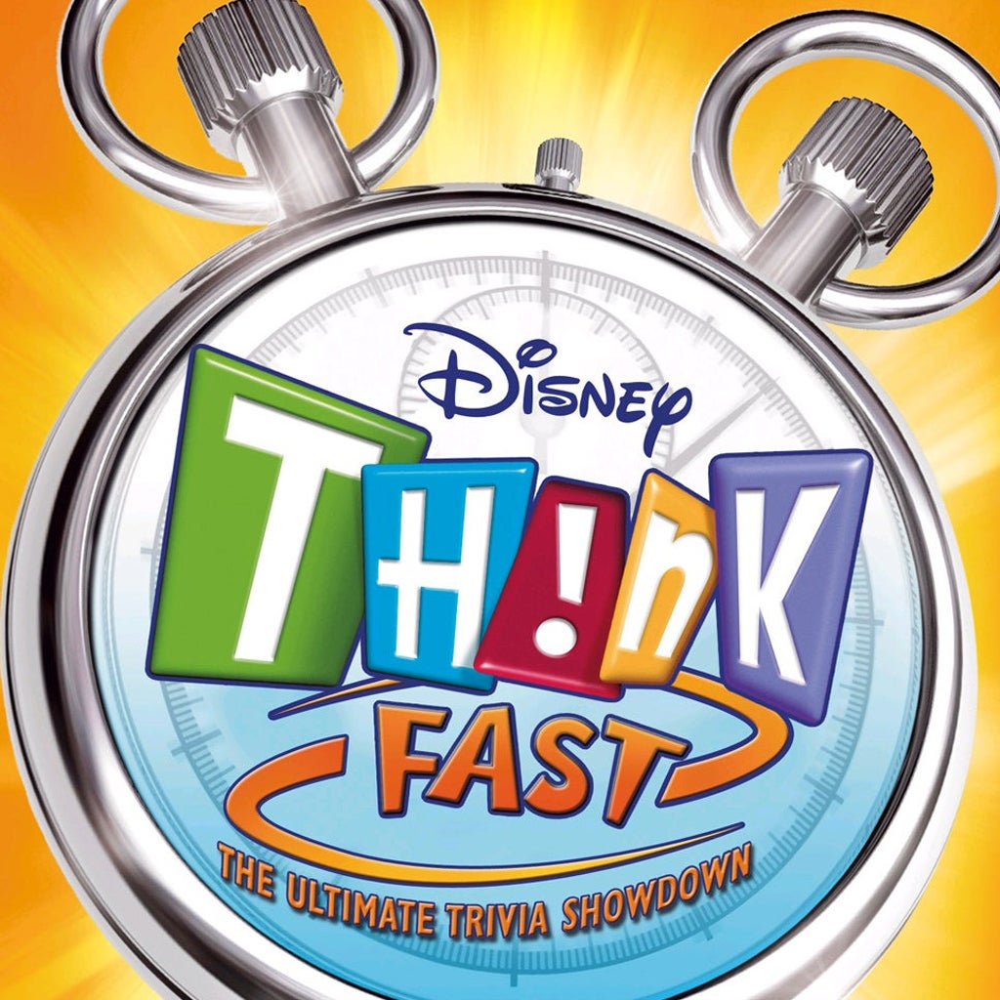
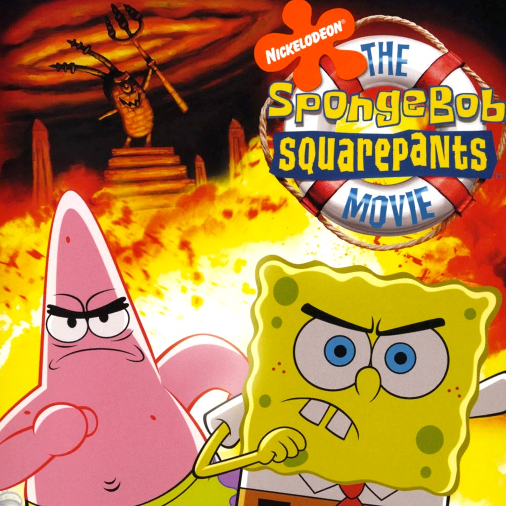

| Tier | Games | Description | Genres | Cover |
|---|---|---|---|---|
| S | Naruto: Ultimate Ninja 2, Dragon Ball Z: Budokai Tenkaichi, Xenosaga Episode III, Kingdom Hearts II | Some of my absolute favorites, I can replay these games at anytime without getting bored! | Fighting / RPG |  |
| A | Sonic Heroes, Sonic Riders, Over the Hedge, Kingdom Hearts | Fun and incredibly nostalgic, just slightly below the top of the list. | Action / Platformer |  |
| B | Bully, Grand Theft Auto: San Andreas, The Simpsons Hit & Run, Zone of the Enders | Really fun an great experiences, not my all-time favorites but they aren't bad in the slightest. | Action / Adventure |  |
| C | Disney Think Fast, Castlevania: Lament of Innocence, Devil May Cry | Good games that I won't replay often for one reason or another but not still very fun. | Action / Puzzle |  |
| D | SpongeBob SquarePants, Gran Turismo 4, The Adventures of Cookie & Cream | Just didn’t hit the mark for me. | Various |  |
Reflection
Ranking these games felt like a blast from the past, I was able to be reminded of the fun times and the fond memories I have with each and every single one of these games. Each game on this list is something I enjoy and appreiciate, this list merely ranks them based on my own feelings and experiences.